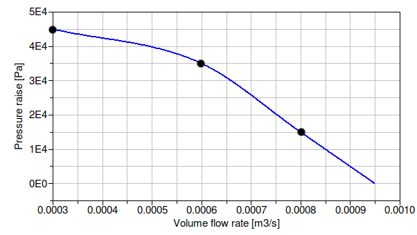
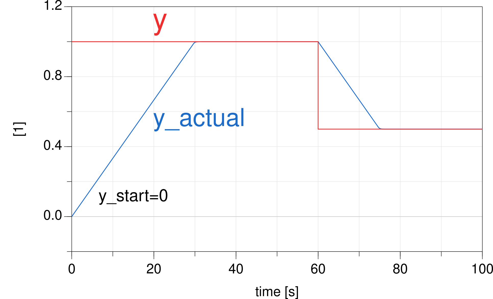

User's Guide
This package contains models for fans and pumps. The same models are used for fans or pumps.
A detailed description of the fan and pump models can be found in Wetter (2013). Below, the models are briefly described.
The models use performance curves that compute pressure rise, electrical power draw and efficiency as a function of the volume flow rate and the speed. The following performance curves are implemented:
| Independent variable | Dependent variable | Record for performance data | Function |
|---|---|---|---|
| Volume flow rate | Pressure | flowParameters | pressure |
| Relative volumetric flow rate | Efficiency | efficiencyParameters | efficiency |
| Volume flow rate | Power | powerParameters | power |
These performance curves are implemented in Buildings.Fluid.Movers.BaseClasses.Characteristics, and are used in the performance records in the package Buildings.Fluid.Movers.Data. The package Buildings.Fluid.Movers.Data contains different data records. The table below shows which data records can be used for what models. Note that not all records can be used with all models, as the records only declare the minimum set of required data.
| Data.FlowControlled | Data.SpeedControlled_y | Data.SpeedControlled_Nrpm | |
|---|---|---|---|
| FlowControlled_m_flow | |||
| FlowControlled_dp | |||
| SpeedControlled_y | |||
| SpeedControlled_Nrpm |
The models Buildings.Fluid.Movers.SpeedControlled_y and Buildings.Fluid.Movers.SpeedControlled_Nrpm take as an input either a control signal between 0 and 1, or the rotational speed in units of [1/min]. From this input and the current flow rate, they compute the pressure rise. This pressure rise is computed using user-provided list of operating points that defines the fan or pump curve at full speed. For other speeds, similarity laws are used to scale the performance curves, as described in Buildings.Fluid.Movers.BaseClasses.Characteristics.pressure.
For example, suppose a pump needs to be modeled whose pressure versus flow relation crosses, at full speed, the points shown in the table below.
| Volume flow rate [m3⁄h] | Head [Pa] |
|---|---|
| 0.0003 | 45000 |
| 0.0006 | 35000 |
| 0.0008 | 15000 |
Then, a declaration would be
Buildings.Fluid.Movers.SpeedControlled_y pum(
redeclare package Medium = Medium,
per.pressure(V_flow={0.0003,0.0006,0.0008},
dp ={45,35,15}*1000))
"Circulation pump";
This will model the following pump curve for the pump input signal y=1.

The models Buildings.Fluid.Movers.FlowControlled_dp and Buildings.Fluid.Movers.FlowControlled_m_flow take as an input the pressure difference or the mass flow rate. This pressure difference or mass flow rate will be provided by the fan or pump, i.e., the fan or pump has idealized perfect control and infinite capacity. These two models do not have a performance curve for the flow characteristics. The reason for not using a performance curve for the flow characteristics is that
All models have a parameter filteredSpeed. This
parameter affects the fan output as follows:
filteredSpeed=false, then the input signal y (or
Nrpm, m_flow_in, or dp_in)
is equal to the fan speed (or the mass flow rate or pressure rise).
Thus, a step change in the input signal causes a step change in the fan speed (or mass flow rate or pressure rise).
If filteredSpeed=false, which is the default,
then the fan speed (or the mass flow rate or the pressure rise)
is equal to the output of a filter. This filter is implemented
as a 2nd order differential equation and can be thought of as
approximating the inertia of the rotor and the fluid.
Thus, a step change in the fan input signal will cause a gradual change
in the fan speed.
The filter has a parameter riseTime, which by default is set to
30 seconds.
The rise time is the time required to reach 99.6% of the full speed, or,
if the fan is switched off, to reach a fan speed of 0.4%.
The figure below shows for a fan with filteredSpeed=true
and riseTime=30 seconds the
speed input signal and the actual speed.

Although many simulations do not require such a detailed model
that approximates the transients of fans or pumps, it turns
out that using this filter can reduce computing time and
can lead to fewer convergence problems in large system models.
With a filter, any sudden change in control signal, such as when
a fan switches on, is damped before it affects the air flow rate.
This continuous change in flow rate turns out to be easier, and in
some cases faster, to simulate compared to a step change.
For most simulations, we therefore recommend to use the default settings
of filteredSpeed=true and riseTime=30 seconds.
An exception are situations in which the fan or pump is operated at a fixed speed during
the whole simulation. In this case, set filteredSpeed=false.
Note that if the fan is part of a closed loop control, then the filter affects
the transient response of the control.
When changing the value of filteredSpeed, the control gains
may need to be retuned.
We now present values control parameters that seem to work in most cases.
Suppose there is a closed loop control with a PI-controller
Buildings.Controls.Continuous.LimPID
and a fan or pump, configured with filteredOpening=true and riseTime=30 seconds.
Assume that the transient response of the other dynamic elements in the control loop is fast
compared to the rise time of the filter.
Then, a proportional gain of k=0.5 and an integrator time constant of
Ti=15 seconds often yields satisfactory closed loop control performance.
These values may need to be changed for different applications as they are also a function
of the loop gain.
If the control loop shows oscillatory behavior, then reduce k and/or increase Ti.
If the control loop reacts too slow, do the opposite.
All models compute the motor power draw Pele, the hydraulic power input Whyd, the flow work Wflo and the heat dissipated into the medium Q. Based on the first law, the flow work is
Wflo = | V̇ Δp |,
where V̇ is the volume flow rate and
Δp is the pressure rise.
The heat dissipated into the medium is as follows:
If the motor is cooled by the fluid, as indicated by
per.motorCooledByFluid=true, then the heat dissipated into the medium is
Q = Pele - Wflo.
If per.motorCooledByFluid=false, then the motor is outside the fluid stream,
and only the shaft, or hydraulic, work Whyd enters the thermodynamic
control volume. Hence,
Q = Qhyd - Wflo.
The efficiencies are computed as
η = Wflo ⁄ Pele = ηhyd ηmot
ηhyd = Wflo ⁄ Whyd
ηmot = Whyd ⁄ Pele
where ηhyd is the hydraulic efficiency, ηmot is the motor efficiency and Q is the heat released by the motor.
If per.use_powerCharacteristic=true,
then a set of data points for the power Pele for different
volume flow rates at full speed needs to be provided by the user.
Using the flow work Wflo and the electrical power input
Pele, the total efficiency is computed as
η = Wflo ⁄ Pele,
and the two efficiencies ηhyd and ηmot are computed as
√ηhyd = √ηmot = η.
However, if per.use_powerCharacteristic=false, then
performance data for
ηhyd and
ηmot need to be provided by the user, and hence
the model computes
η = ηhyd ηmot
Pele = Wflo ⁄ η.
The efficiency data for the motor are a list of points V̇ and ηmot.
All models can be configured to have a fluid volume at the low-pressure side. Adding such a volume sometimes helps the solver to find a solution during initialization and time integration of large models.
If per.motorCooledByFluid=true, then
the enthalpy change between the inlet and outlet fluid port is equal
to the electrical power Pele that is consumed by the component.
Otherwise, it is equal to the hydraulic work Whyd.
The parameter addPowerToMedium, which is by default set to
true, can be used to simplify the equations.
If it is set to false, then no enthalpy change occurs between
inlet and outlet other than the flow work Wflo.
This can lead to simpler equations, but the temperature rise across the component
will be underestimated, in particular for fans.
For a detailed description of the models with names FlowMachine_*,
see their base class
Buildings.Fluid.Movers.BaseClasses.PartialFlowMachine.
The models with names FlowMachine_* have similar parameters than the
models in the package Modelica.Fluid.Machines.
However, the models in this package differ primarily in the following points:
Modelica.Fluid restrict the number of revolutions, and hence the flow
rate, to be non-zero.
port_b.
medium.d. Therefore, for fans,
head would be converted to pressure using the density of air. However, for fans,
manufacturers typically publish the head in millimeters water (mmH20).
Therefore, to avoid confusion when using these models with media other than water,
we changed the models to use total pressure in Pascals instead of head in meters.
Michael Wetter. Fan and pump model that has a unique solution for any pressure boundary condition and control signal. Proc. of the 13th Conference of the International Building Performance Simulation Association, p. 3505-3512. Chambery, France. August 2013.
Extends from Modelica.Icons.Information (Icon for general information packages).